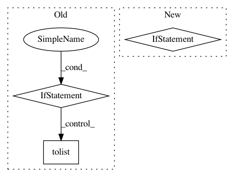

4a046f02b7e5fd37a9ed4f7f51a6f55e01d1b737,texar/utils/utils.py,,map_ids_to_strs,#Any#Any#Any#Any#Any#Any#,680
Before Change
tokens = vocab.map_ids_to_tokens_py(ids)
if not join:
if isinstance(ids, (list, tuple)):
return type(ids)(tokens.tolist())
else:
return tokens
str_ = str_join(tokens)
if strip_eos is not None:
str_ = _strip_eos_(str_, strip_eos)
After Change
else:
return [_recur_split(ss) for ss in s]
if join == True:
return str_
else:
return _recur_split(str_)
def ceildiv(a, b):
Divides with ceil.
E.g., `5 / 2 = 2.5`, `ceildiv(5, 2) = 3`.
In pattern: SUPERPATTERN
Frequency: 3
Non-data size: 3
Instances
Project Name: asyml/texar
Commit Name: 4a046f02b7e5fd37a9ed4f7f51a6f55e01d1b737
Time: 2018-08-07
Author: tanbowen@sjtu.edu.cn
File Name: texar/utils/utils.py
Class Name:
Method Name: map_ids_to_strs
Project Name: NervanaSystems/coach
Commit Name: 67eb9e4c28098d93ac122d65833c20b22b7e86c7
Time: 2018-11-19
Author: sina.beh@gmail.com
File Name: rl_coach/architectures/mxnet_components/architecture.py
Class Name: MxnetArchitecture
Method Name: _dummy_model_inputs
Project Name: deepmipt/DeepPavlov
Commit Name: 1a6d4020c53e2b39e224616481528fad901cbd4e
Time: 2018-10-15
Author: yoptar@gmail.com
File Name: deeppavlov/core/commands/infer.py
Class Name:
Method Name: predict_on_stream